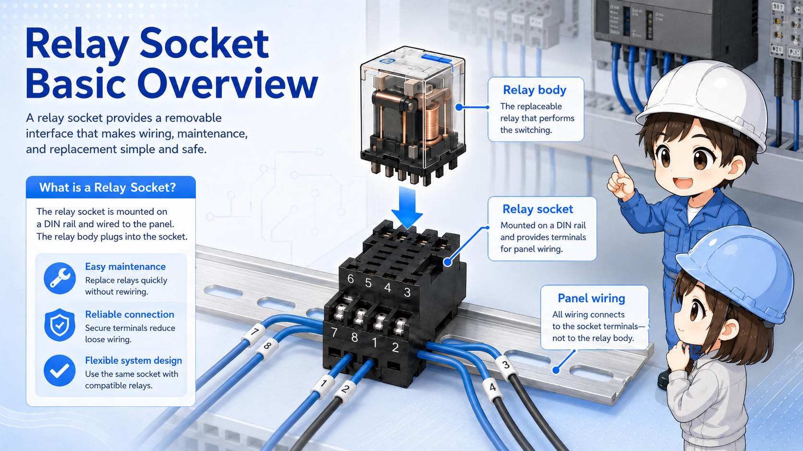
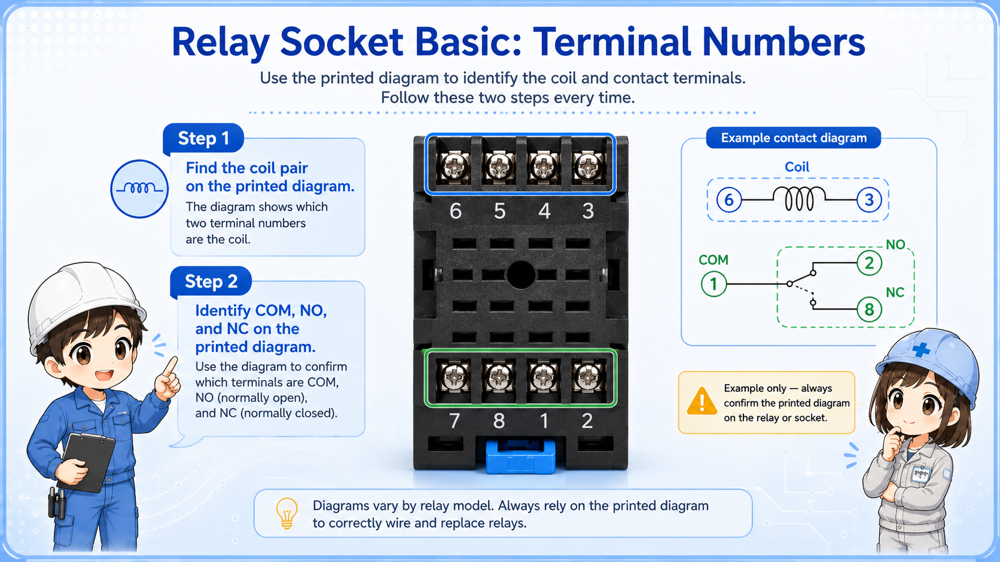
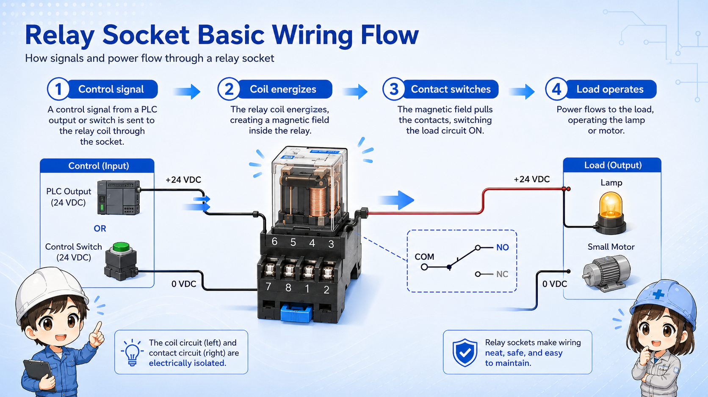
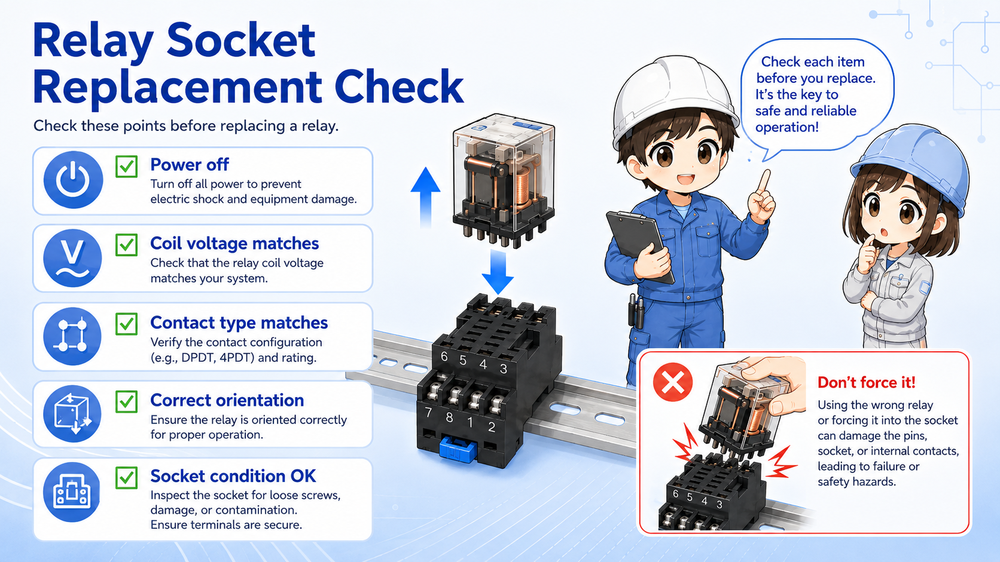
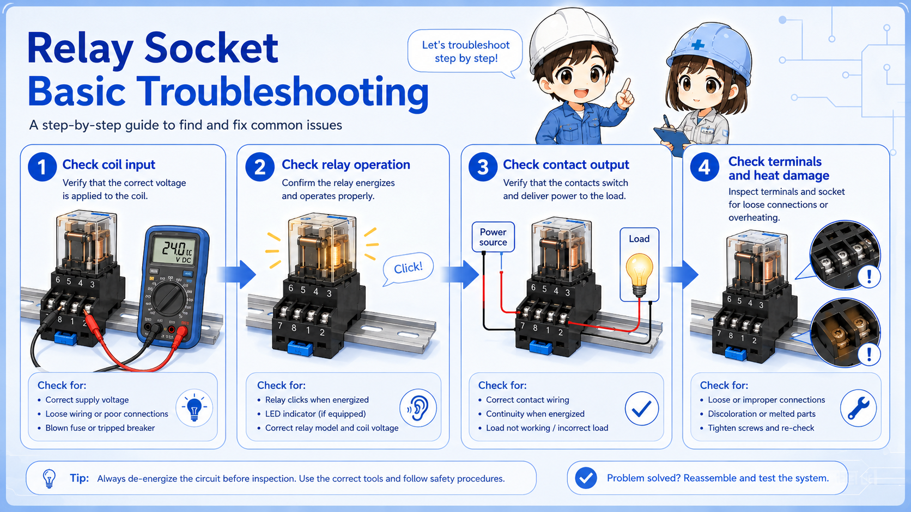

Good for you if
- You often see relays mounted on a base in a panel.
- You want to understand terminal numbers and wiring checks.
- You need a beginner-friendly view before troubleshooting relay circuits.
A relay socket is the base that lets a relay plug into a control panel without wiring directly to the relay body. This guide explains its role, terminal numbers, coil/contact wiring, and practical replacement checks.
Think of the relay socket as the fixed wiring base for a plug-in relay.
A relay socket is mounted in a control panel and connected to wires. The relay itself plugs into that socket. This makes it possible to remove or replace the relay without disconnecting every wire from the relay body.
The important point is that the socket is not just a holder. It also brings the relay pins out to screw terminals, spring terminals, or another wiring connection style. In the field, the wires usually stay on the socket while the relay is replaced.

This is why many control panels use plug-in relays with sockets instead of wiring directly to a relay body.
The relay does the switching. The socket provides the mounting and wiring interface.
| Part | Main role | What to check |
|---|---|---|
| Relay body | Contains the coil and contacts that operate electrically. | Coil voltage, contact rating, contact configuration, pin layout. |
| Relay socket | Holds the relay and connects panel wiring to relay pins. | Compatible relay model, terminal numbers, mounting type, wiring condition. |
| Panel wiring | Connects power, PLC signals, lamps, solenoids, or other devices. | Correct terminal position, loose wires, damaged ferrules, labeling. |
If a relay fails, the relay body may be changed while the socket remains. If the socket is damaged, loose, burned, or the terminal screw is stripped, the socket itself may also need replacement.
Do not assume terminal numbers only from memory. Check the actual relay and socket markings.
Many relay sockets show terminal numbers near the wiring terminals. These numbers correspond to the relay pins. The coil terminals and contact terminals are separated by function, but the exact numbers depend on the relay family and socket type.

Two relay sockets can look similar but have different terminal layouts. Always compare the relay model, socket model, and printed wiring diagram before replacement.
A relay socket usually has a coil side and a contact side.
On the coil side, a control signal energizes the relay coil. On the contact side, the relay switches a separate circuit. This separation is one reason relays are useful in control panels.

A PLC output, switch, or control circuit supplies the relay coil.
The relay changes its contact state when the coil is energized.
The contact side turns another signal or load circuit on or off.
A plug-in relay is easy to replace, but it should not be replaced blindly.

Confirm the circuit is safely isolated before touching the relay or socket.
Do not mix AC and DC coil types or different rated voltages.
Check NO/NC arrangement and number of poles.
Look for heat marks, loose terminals, cracked plastic, or poor contact tension.
If the relay does not fit naturally, the model or pin layout may be wrong. Forcing it can damage the socket or create a dangerous wiring mistake.
When a relay does not behave as expected, the socket and wiring should also be checked.
A relay may be good, but the socket terminal may be loose. A socket may be wired correctly, but the relay coil voltage may be missing. Separating these points makes troubleshooting easier.


When a relay does not turn on, do not start by replacing parts. First check whether the coil voltage is reaching the socket terminals.

So I should check the signal at the socket, then check whether the relay contact is actually changing state?
Exactly. The socket is the meeting point between wiring and the relay. It is a good place to divide the problem.
A relay socket makes relay wiring cleaner and replacement easier by keeping the panel wiring on a fixed base. The relay body plugs into the socket and performs the switching.
For practical work, focus on three points: the coil terminals, the contact terminals, and the socket condition. If those are checked carefully, relay replacement and troubleshooting become much less confusing.
The relay is the replaceable switching part. The socket is the fixed wiring base. Always confirm the model, voltage, terminal numbers, and wiring condition before changing parts.